Explore
This page contains our own data and public data processed.
Our datasets
- scRNA-seq of CD45+ cells from the spleen, peritoneum, lungs and the liver from young and aged male mice
- Bulk RNA-seq of splenic naïve (TN), effector memory (TEM) and age-associated (TAA) CD8 T cells from aged mice
- scRNA-seq of splenic CD8 T cells from young donor (ALAW-4) 1 month post transfer into aged host and splenic CD8 T cells from the host (ALAW-3)
- scATAC-seq of CD45+ cells from the spleen from young and aged male mice
- scRNA-seq of PBMC from 10 young and 10 old healthy male donors
- scATAC-seq of PBMC from 3 young and 3 old healthy male donors
Public datasets
- scRNA-seq of immune cells selected from Tabula Muris Senis
(The Tabula Muris Consortium, Nature 2020 [10.1038/s41586-020-2496-1]) - scRNA-seq of kidney, lung, and spleen tissue from young (7-8 months) and old (22-23 months) male mice
(GSE132901)
(Kimmel et al., Genome Reseach 2019 [ doi:10.1101/gr.253880.119) - scRNA-seq: Identification of tissue regulatory T cell precursors in lymphoid organs (GSE130879)
(Delacher et al. Immunity 2020 [10.1016/j.immuni.2019.12.002]) - scRNA-seq of LCMV antigen specific CD8 T cells during early phase of acute and chronic infection
(Chen et al., Immunity 2019 [10.1016/j.immuni.2019.09.013]) - Epigenetic stability of exhausted T cells limits durability of reinvigoration by PD-1 blockade
(GSE867989)
(EPauken, Kristen et al., Science 2016 [10.1126/science.aaf2807]) - Developmental Relationships of Four Exhausted CD8+ T Cell Subsets Reveals Underlying Transcriptional and
Epigenetic Landscape Control Mechanisms (GSE149879)
(Beltra, Jean-Christophe, et al., Immunity 2020 [10.1016/j.immuni.2020.04.014])
Our datasets
scRNA-seq of CD45+ cells from the spleen, peritoneum, lungs and the liver from young and aged male mice
Bulk RNA-seq of splenic naïve (TN), effector memory (TEM) and age-associated (TAA) CD8 T cells from aged mice
| URL | Description | |
|---|---|---|
| 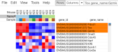 | https://artyomovlab.wustl.edu/phantasus/?preloaded=Pandhey/Denis/Denis_SWA12925_log2_quantile_12K | Sorted CD8 T cell populations from 4 aged mice |
scRNA-seq of splenic CD8 T cells from young donor (ALAW-4) 1 month post transfer into aged host and splenic CD8 T cells from the host (ALAW-3)
| URL | Description | |
|---|---|---|
| 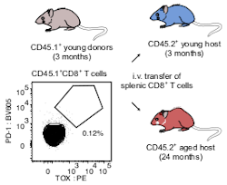 | https://artyomovlab.wustl.edu/sce/?token=DT-2233_M2_filter | CD8 T cells: transfer experiment |
scATAC-seq of CD45+ cells from the spleen from young and aged male mice
| URL | Description | |
|---|---|---|
| 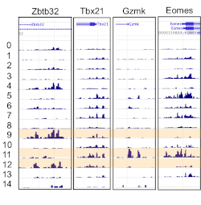 | https://artyomovlab.wustl.edu/sce/?token=2019_scatacseq_Denis | Single-cell Browser: peak coordinates |
| https://artyomovlab.wustl.edu/sce/?token=2019_scatacseq_Denis_genes | Single-cell Browser: genes associated with peaks | |
| http://artyomovlab.wustl.edu/jbr/2019_gxfer1_DT1634_Denis/#chr13:113140458-113257058 | JBR Genome Browser session |
scRNA-seq of PBMC from 10 young and 10 old healthy male donors
| URL | Description | |
|---|---|---|
| 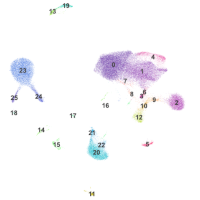 | http://artyomovlab.wustl.edu/sce/?token=DT-1812_PC40_final_new | Total PBMC |
| https://artyomovlab.wustl.edu/sce/?token=DT-1812_new_CD3 | CD3 T cells | |
| https://artyomovlab.wustl.edu/sce/?token=DT-1812_new_CD3_CD8 | CD8 T cells | |
| https://artyomovlab.wustl.edu/sce/?token=DT-1812_new_CD3_CD4 | CD4 T cells | |
| https://artyomovlab.wustl.edu/sce/?token=DT-1812_new_CD3_CD8_Monocle_antibodies_removed | Monocle analysis of CD8 T cells | |
| https://artyomovlab.wustl.edu/phantasus/?preloaded=Pandhey/Denis/DT-1812_Final | Average expression per cluster in PBMC |
scATAC-seq of PBMC from 3 young and 3 old healthy male donors
| URL | Description | |
|---|---|---|
| 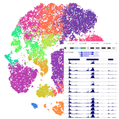 | https://artyomovlab.wustl.edu/sce/?token=2019_scatacseq_human_3vs3_pbmc | Single-cell Browser: peak coordinates |
| https://artyomovlab.wustl.edu/sce/?token=2019_scatacseq_human_3vs3_pbmc_genes | Single-cell Browser: genes associated with peaks | |
| http://artyomovlab.wustl.edu/jbr/2019_scatac_DT1755_3vs3_human_pbmc | JBR Genome Browser session |
Processed data from public datasets
scRNA-seq of immune cells selected from Tabula Muris Senis
| URL | Description | |
|---|---|---|
| 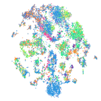 | http://artyomovlab.wustl.edu/sce/?token=tabula_muris_senis_start | CD45 cells |
| http://artyomovlab.wustl.edu/sce/?token=tabula_muris_senis_start_CD3_doublets_removed | CD3 T cells |
scRNA-seq of kidney, lung, and spleen tissue from young (7-8 months) and old (22-23 months) male mice (GSE132901)
| URL | Description | |
|---|---|---|
| 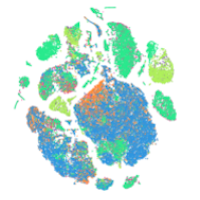 | https://artyomovlab.wustl.edu/sce/?token=GSE132901 | Spleen, lungs, kidney |
| https://artyomovlab.wustl.edu/sce/?token=GSE132901_Spleen | Spleen | |
| https://artyomovlab.wustl.edu/sce/?token=GSE132901_Lung | Lungs | |
| https://artyomovlab.wustl.edu/sce/?token=GSE132901_Kidney | Kidney | |
| https://artyomovlab.wustl.edu/phantasus/?preloaded=GSE132901_Spleen | Average expression per cluster in the spleen | |
| https://artyomovlab.wustl.edu/phantasus/?preloaded=GSE132901_Lung | Average expression per cluster in lungs | |
| https://artyomovlab.wustl.edu/phantasus/?preloaded=GSE132901_Kidney | Average expression per cluster in kidney |
scRNA-seq: Identification of tissue regulatory T cell precursors in lymphoid organs (GSE130879)
| URL | Description | |
|---|---|---|
| 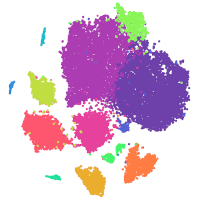 | https://artyomovlab.wustl.edu/sce/?token=GSE130879 | CD4 Treg cells |
scRNA-seq of LCMV antigen specific CD8 T cells during early phase of acute and chronic infection
| URL | Description | |
|---|---|---|
| 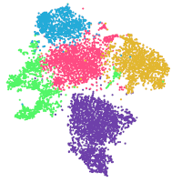 | https://artyomovlab.wustl.edu/sce/?token=GSE131535 | LCMV-Ag-specific CD8 T cells |
Epigenetic inflexibility of exhausted T cells limits durability of reinvigoration by PD-1 blockade (GSE867989)
| URL | Description | |
|---|---|---|
| 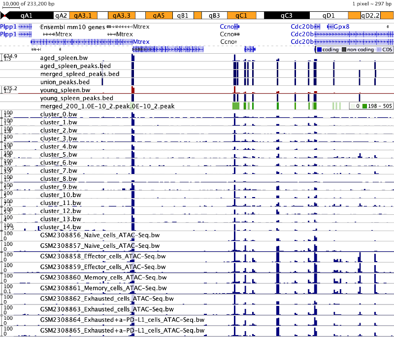 | http://artyomovlab.wustl.edu/jbr/gse86797_atac_seq | JBR Genome Browser session |
| http://artyomovlab.wustl.edu/jbr/2019_DT1634_Denis_GSE86797/ | Combined JBR Genome Browser session with scATAC-seq of CD45+ cells from the mice spleen |
Developmental Relationships of Four Exhausted CD8+ T Cell Subsets Reveals Underlying Transcriptional and Epigenetic Landscape Control Mechanisms (GSE149879)
| URL | Description | |
|---|---|---|
| 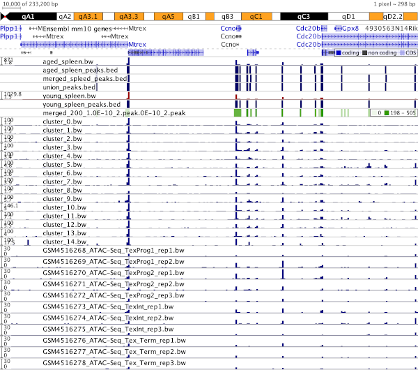 | http://artyomovlab.wustl.edu/jbr/gse149877_atac_seq | JBR Genome Browser session |
| http://artyomovlab.wustl.edu/jbr/2019_DT1634_Denis_GSE149877/ | Combined JBR Genome Browser session with scATAC-seq of CD45+ cells from the mice spleen |